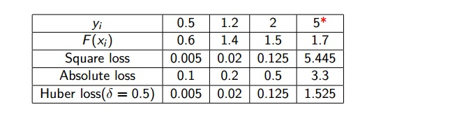
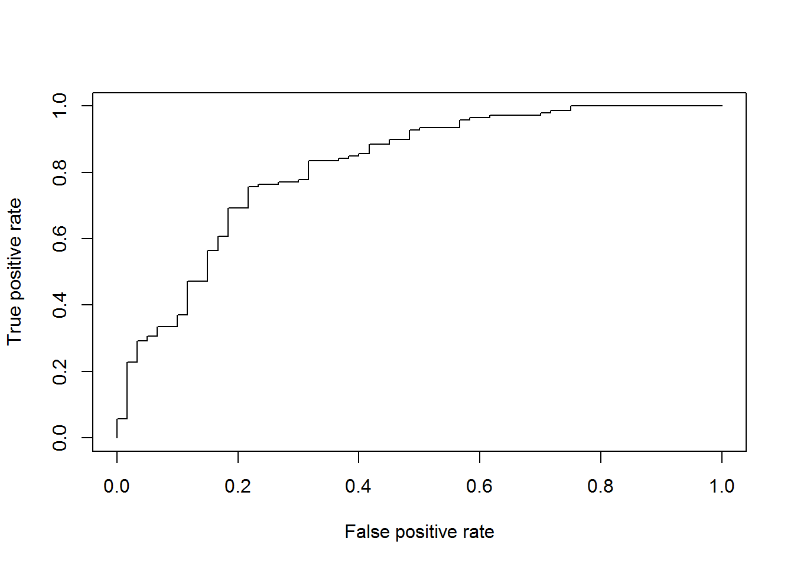

5. Bagging, RandomForest và Boosting¶
5.1. Bagging¶

Mô hình cây quyết định như đã đề cập, sẽ gặp phải vấn đề
high variance. Nghĩa là nếu chúng ta chia ngẫu nhiên tập dữ liệu
training làm 2 tập dữ liệu con, và sau đó xây dựng mô hình trên 2 tập dữ
liệu con đó, kết quả nhận được sẽ có thể khá khác nhau.
Boostrap aggregation hay bagging sẽ có thể làm giảm variance,
đây là một phương pháp rất hiệu quả và phổ biến khi chúng ta sử dụng các
phương pháp liên quan đến cây quyết định.
Giả sử, có tập hợp n quan sát độc lập Z1,…, Zn, mỗi quan sát với variance σ^2, variance của giá trị trung bình các quan sát Z là σ^2/n. Nói cách khác, trung bình tập hợp các quan sát sẽ làm giảm variance. Vì thế cách tự nhiên nhất để làm giảm variance và tăng độ chính xác của dự báo là lấy thật nhiều các dữ liệu training khác nhau, rồi xây dựng các mô hình dự báo sử dụng các tập dữ liệu training đó, sau đó lấy trung bình các kết quả dự báo. Nói cách khác, chúng ta sẽ tính toán fˆ1(x), fˆ2(x), . . . , fˆB(x) sử dụng B tập dữ liệu training khác nhau, sau đó lấy trung bình để nhận được một mô hình đơn với variance thấp như sau:
Tuy nhiên, điều đó là không thực tế vì chúng ta không thể có nhiều dữ
liệu training khác nhau, dữ liệu là hữu hạn. Vì vậy, chúng ta sẽ sử dụng
boostrap, tức phương pháp lấy mẫu ngẫu nhiên có hoàn lại từ tập dữ
liệu training duy nhất của chúng ta. Theo đó, chúng ta sẽ tạo ra B
boostrapped dữ liệu training khác nhau để có được các giá trị dự báo
khác nhau, và sau đó sẽ lấy trung bình tất cả các kết quả dự báo, thu
được kết quả cuối cùng:
Đây gọi là bagging. Bagging có thể cải thiện chất lượng dự báo cho
rất nhiều các mô hình hồi quy, đặc biệt hiệu quả đối với mô hình cây
quyết định. Để áp dụng bagging với regression trees, chúng ta đơn giản
chỉ cần xây dựng B regression trees sử dụng B boostrapped dữ liệu
training, sau đó lấy trung bình các kết quả dự báo. Những cây quyết định
này được xây dựng rất sâu (nhiều tầng) và không được “tỉa”. Vì thế mỗi
cây quyết định trên sẽ có variance cao, nhưng bias thấp. Lấy trung bình
kết quả B cây quyết định này sẽ làm giảm variance. Bagging có thể cải
thiện chất lượng dự báo một cách đáng kể khi kết hợp hàng trăm hoặc thậm
chí hàng nghìn cây quyết định lại với nhau.
Cho đến thời điểm hiện tại, chúng ta đã mô tả phương pháp bagging đối
với regression trees, tức dự báo biến đầu ra là biến liên tục. Vậy
phương pháp bagging có thể sử dụng với bài toán mà biến đầu ra là biến
rời rạc không? Trong trường hợp này, giả sử khi chúng ta muốn phân loại
một quan sát mới, chúng ta có thể dự báo được quan sát mới trên thuộc
class nào trong B cây quyết định khác nhau, rồi sau đó, lấy
majority vote - tức là, quan sát mới trên sẽ rơi vào class mà tần
suất xuất hiện của nó nhiều nhất trong B kết quả dự báo khác nhau.
Trong phương pháp bagging, tham số về số lượng cây quyết định B nói trên mà càng lớn thì cũng không thể dẫn đến overfitting. Trong thực tế, chúng ta sẽ chọn số lượng cây quyết định đủ lớn để sao cho sai số đủ nhỏ.
Out-of-Bag Error Estimation
Có một cách khá đơn giản để ước lượng sai số dự báo (test error) của mô
hình bagging mà không cần dùng cross-validation hoặc tập dữ liệu
validation. Nhắc lại key của phương pháp bagging là việc các cây quyết
định sẽ được xây dựng nhiều lần sử dụng những tập dữ liệu bootstrapped
khác nhau. Mỗi một cây quyết định được xây đều sử dụng khoảng 2/3 số
quan sát, còn 1/3 quan sát còn lại không được sử dụng trong quá trình
xây dựng mô hình sẽ được gọi là những quan sát out-of-bag (OOB).
Chúng ta có thể dự báo kết quả cho quan sát thứ i sử dụng từng cây quyết
định mà các quan sát là OOB. Điều này sẽ mang lại khoảng B/3 giá trị dự
báo cho quan sát thứ i này. Để dự báo giá trị cuối cùng của quan sát đó,
chúng ta sẽ lấy trung bình các kết quả dự báo (đối với bài toán hồi quy
- regression) hoặc lấy theo số đông - majority vote (đối với bài toán
phân loại - classification). Đó chính là kết quả dự báo OOB (OOB
prediction) cho quan sát i. OOB prediction có thể sử dụng cho từng n
quan sát, và có thể tính toán được OOB MSE (đối với bài toán hồi quy)
hoặc classification error (đối với bài toán phân loại). Cách sử dụng OOB
để ước lượng sai số dự báo (test error) sẽ thuận tiện hơn so với cách
cross-validation khi sử dụng bagging đối với tập dữ liệu lớn.
Variable Importance Measures
Như vừa tìm hiểu, bagging sẽ cải thiện được độ chính xác của dự báo
so với mô hình cây quyết định đơn lẻ. Tuy nhiên, bagging lại rất khó để
giải thích kết quả mô hình do việc tổng hợp rất nhiều cây quyết định
khác nhau.
Mặc dù đối với bagging rất khó để giải thích kết quả mô hình, nhưng chúng ta vẫn có thể xem được thống kê tổng quát về mức độ quan trọng của các biến đầu vào trong mô hình bằng việc sử dụng RSS (đối với bagging regression trees) hoặc chỉ số Gini (đối với bagging classification trees).
5.2. Random Forests¶
Cũng giống như bagging, random forests cũng xây dựng một tập hợp
các cây quyết định sử dụng các tập dữ liệu con được chia theo phương
pháp boostrap (lấy mẫu ngẫu nhiên có hoàn lại) từ tập dữ liệu training
ban đầu. Tuy nhiên, với phương pháp random forests thì những tập dữ
liệu con đó sẽ không bao gồm tất cả các biến đầu vào (p - tổng số lượng
biến đầu vào) trong tập dữ liệu training ban đầu như bagging mà chỉ
bao gồm m biến nhất định (thông thường m ~ sqrt(p)).
Đối với bagging các cây quyết định có thể tương quan chặt chẽ với
nhau (highly correlated) do các cây đều lấy cùng một số lượng là tất
cả các biến đầu vào trong tập dữ liệu training ban đầu. Điều đó sẽ dẫn
đến việc variance sẽ cao. Trong khi đó, random forests có thể khắc
phục được vấn đề trên khi mỗi cây quyết định được xây dựng chỉ lấy ngẫu
nhiên m biến đầu vào ngẫu nhiên. Quá trình đó được gọi là
decorrelating. Quá trình này sẽ giúp kết quả dự báo đáng tin cậy
hơn.
Như vậy, điểm khác biệt quan trọng nhất giữa bagging và
random forests là việc chọn số lượng biến đầu vào:
bagginglấy tất cả các biến đầu vào (p)random forestslấy m biến nhất định (m ~ sqrt(p))
Vì thế, nếu xây dựng mô hình random forests với số lượng biến đầu
vào m = p (tức lấy tất cả các biến đầu vào) thì mô hình trở thành
bagging. Do đó, có thể nói bagging là một trường hợp đặc biệt của
random forests.
Thuật toán của Random Forest sẽ bao gồm việc lấy mẫu và chọn biến để
xây dựng một số lượng lớn các cây quyết định khác nhau. Kết quả dự báo
cuối cùng của một quan sát sẽ lấy trung bình các kết quả dự báo của các
cây quyết định (đối với bài toán hồi quy - regression) hoặc lấy majority
vote từ các kết quả dự báo từ các cây quyết định để xác định quan sát đó
thuộc class nào (đối với bài toán phân loại - classification).
Giả định rằng N là số lượng quan sát của tập dữ liệu training và p là số lượng biến đầu vào. Thuật toán sẽ diễn ra theo các bước như sau:
- Bước 1: Xây dựng số lượng lớn các cây quyết định bằng việc lấy mẫu ngẫu nhiên có hoàn lại N quan sát từ tập dữ liệu training
- Bước 2: Với mỗi cây quyết định lựa chọn m < p biến nhất định. Những biến này được cân nhắc lựa chọn để phân nhánh, với mỗi cây quyết định thì đều có số lượng biến là m.
- Bước 3: Xây dựng các cây (không thực hiện tỉa cây)
- Bước 4: Dự báo các quan sát mới bằng việc lấy trung bình các kết quả dự báo của các cây quyết định khác nhau đã được xây dựng (đối với bài toán hồi quy), hoặc lấy theo kết quả số đông của các cây quyết định khác nhau đã được xây dựng (đối với bài toán phân loại).
Out-of-bag (OOB) error estimate được tính toán bằng việc phân loại quan sát mới mà không có trong tập dữ liệu training khi xây dựng cây quyết định. Việc này sẽ hữu ích khi mà chúng ta không có dữ liệu validation.
Trong R để xây dựng mô hình random forests chúng ta có thể sử dụng
hàm randomForest() trong package randomForest. Số lượng cây mặc
định là 500, số lượng biến tại mỗi cây mặc định là sqrt(tổng số biến),
và kích thước nhỏ nhất của cây mặc định là 1.
library(ISLR)
library(randomForest) # Package sử dụng cho Random Forests
set.seed(1234)
# Data
data("Default")
# Chia dữ liệu thành 2 tập: train/test
set.seed(1234)
train <- sample(nrow(Default), 0.7*nrow(Default))
df.train <- Default[train,]
df.validate <- Default[-train,]
# Biến đầu ra của dữ liệu huấn luyện
table(df.train$default)
##
## No Yes
## 6765 235
# Biến đầu ra của dữ liệu kiểm tra
table(df.validate$default)
##
## No Yes
## 2902 98
# Xây dựng mô hình trên tập training
fit_rf <- randomForest(default ~ .,
data = df.train,
# na.action = na.roughfix, # Xử lý giá trị missing (nếu có)
importance = T
)
fit_rf
##
## Call:
## randomForest(formula = default ~ ., data = df.train, importance = T)
## Type of random forest: classification
## Number of trees: 500
## No. of variables tried at each split: 1
##
## OOB estimate of error rate: 2.66%
## Confusion matrix:
## No Yes class.error
## No 6736 29 0.00428677
## Yes 157 78 0.66808511
5.3. Boosting¶
Bây giờ chúng ta sẽ cùng thảo luận về boosting, một phương pháp khác
để cải thiện chất lượng dự báo từ việc sử dụng cây quyết định. Giống như
các phương pháp trước, boosting có thể áp dụng được đối với cả 2 bài
toán: Hồi quy (regression) và phân loại (classification).
Nhắc lại một chút, boosting và random forests sử dụng phương pháp boostrap (lấy mẫu ngẫu nhiên có hoàn lại) để tạo các tập dữ liệu con từ dữ liệu training ban đầu, sau đó xây dựng các cây quyết định đối với từng tập dữ liệu con đó (các cây quyết định được xây dựng độc lập với nhau). Cuối cùng, sẽ tổng hợp lại các cây quyết định để ra được kết quả dự báo cuối cùng bằng cách lấy trung bình các kết quả dự báo của các cây quyết định (đối với bài toán hồi quy), hoặc lấy theo số đông các kết quả dự báo của các cây quyết định (đối với bài toán phân loại).
Boosting cũng hoạt động theo cách tương tự, nhưng khác ở chỗ là việc xây
dựng các cây quyết định từ những tập dữ liệu con khác nhau không phải là
độc lập hoàn toàn với nhau như bagging hay random forests. Thay vào đó,
boosting xây dựng các cây quyết định một cách có trình tự
(sequentially): Mỗi cây kế tiếp được xây dựng bằng cách sử dụng kết
quả từ những cây trước đó. Boosting tập trung nhiều hơn vào những quan
sát bị dự báo sai từ những cây trước để góp phần cải thiện kết quả dự
báo cuối cùng. Boosting không dùng boostrap để chia tập dữ liệu training
ban đầu, mà thay vào đó là việc dùng các phiên bản đã được modified từ
tập dữ liệu train ban đầu để xây dựng các cây quyết định.
Chúng ta sẽ cùng xem xét bài toán hồi quy. Giống như bagging và randomforests, boosting kết hợp nhiều cây quyết định lại với nhau: f1,…, fB.
Thuật toán boosting đối với bài toán hồi quy:
- Bước 1: Đặt fˆ(x) = 0 và ri = yi với mọi i trên tập dữ liệu training
- Bước 2: Với b = 1,2.., B, lặp lại:
- Xây dựng một cây fˆb với d splits (d+1 terminal nodes) với dữ liệu training (X,r).
- Update fˆ bằng việc adding in a shrunken version of the new tree, và update residuals:
- Bước 3: Kết quả của boosted model:
Thay vì việc xây dựng các cây quyết định đơn lẻ với kích thước lớn có
thể dẫn đến vấn đề overfitting, phương pháp boosting sẽ “học” chậm
(learn slowly). Khi xây dựng xong cây quyết định đầu tiên, chúng ta
sẽ xây dựng cây quyết định tiếp theo sử dụng biến đầu ra là phần dư
(residuals) của cây trước đó. Sau đó, sẽ xây dựng các cây quyết định
tiếp theo để update residuals. Mỗi cây có thể có kích thước nhỏ, với chỉ
một vài terminal nodes được quyết định bởi tham số d trong thuật toán.
Bằng việc xây dựng những cây nhỏ với residuals, chúng ta có thể dần dần
cải thiện fˆ. Tham số shrinkage hay learning rate(tốc độ học
của mô hình) λ sẽ làm mô hình “học” chậm và kỹ hơn nữa giúp cải thiện
chất lượng mô hình. Lưu ý rằng khác với bagging, đối với boosting thì
việc xây dựng các cây quyết định tiếp theo sẽ phụ thuộc vào kết quả của
các cây trước đó.
Như vậy, chúng ta đã vừa cùng tìm hiểu về boosting regression trees. Bây
giờ chúng sẽ cùng tìm hiểu về 2 thuật toán trong boosting là
Adaboost và Gradient Boosting.
AdaBoost
AdaBoost kết hợp các “weak learners” để tạo thành “strong learner”
(“weak learners” được hiểu là các cây phân loại chỉ tốt hơn một chút so
với việc đoán ngẫu nhiên). Sau mỗi bước lặp, những quan sát bị phân loại
sai sẽ được đánh trọng số cao hơn, những quan sát được phân loại đúng sẽ
đánh trọng số thấp hơn. Mỗi cây tiếp theo được xây dựng với mục tiêu
phân loại đúng những quan sát đã bị phân loại sai ở cây trước đó.
Chúng ta sẽ mô tả thuật toán Adaboost thông qua việc sử dụng ví dụ
sau đây: Phân loại các quan sát vào 2 nhóm + hoặc -. Chúng ta sẽ
thực hiện các bước sau:

Diễn giải:
- Box 1: Đánh trọng số bằng nhau đối với tất cả quan sát và xây dựng
một decision stump - D1 (cây chỉ gồm 1 split hay 1 tầng) để phân loại
các quan sát thành 2 nhóm
+và-. Kết quả cho thấy có 3 quan sát bị phân loại sai (là+nhưng lại bị cho vào nhóm-), 3 quan sát này sẽ được đánh trọng số cao hơn và tiếp tục xây dựng decision stump khác - D2. - Box 2: D2 được xây dựng với mục đích phân loại đúng 3 quan sát bị
phân loại sai ở D1. Kết quả cho thấy, lại có 3 quan sát bị phân loại
sai (là
-nhưng bị cho vào nhóm+). Lại tiếp tục đánh trọng số cao hơn đối với những quan sát này và tiếp tục xây dựng decision stump - D3. - Box 3: D3 được xây dựng với mục đích phân loại đúng 3 quan sát bị phân loại sai ở D2. Kết quả cho thấy vẫn có những quan sát bị phân loại sai.
- Box 4: Kết hợp D1, D2, D3 để tạo thành D4 - phân loại tốt hơn so với
D1, D2, D3 (nhóm
+và-đã được phân loại hoàn toàn).
Gradient Boosting
Gradient Boosting = Gradient Descent + Boosting
Cả AdaBoost và Gradient Boosting đều kết hợp các “weak learners”
để tạo thành một “strong learner” và đều tập trung vào những quan sát bị
dự báo sai. AdaBoost thì đánh trong số cao hơn vào những quan sát bị dự
báo sai tại mỗi cây trước, và cố gắng dự báo đúng những quan sát đó tại
cây tiếp theo. Trong khi đó, với Gradient Boosting, mỗi một cây mới sẽ
được xây dựng với mục tiêu tối thiểu hóa dần tổng loss của cây trước đó
bằng việc sử dụng phương pháp gradient descent.
Trong Gradient Boosting, việc tính tổng loss dựa vào việc lựa chọn loại “loss function” nào, ví dụ như: square loss, absolute loss, huber loss. Mỗi loại đều có những ưu/nhược điểm riêng.
- Square loss:
- Absolute loss:
- Huber loss:
Ví dụ:

Boosting có 3 tham số cơ bản để tối ưu hóa mô hình
(tuning parameters):
- Số lượng cây quyết định (B): Với boosting khi số lượng cây quá nhiều có thể dẫn đến overfitting, nên chúng ta sẽ sử dụng cross-validation để lựa chọn số lượng cây
- Tốc độ học λ (
learning ratehoặcshrinkage): Giá trị nhỏ, dương. λ có thể nhận các giá trị như: 0.1, 0.01, hay 0.001 tùy từng trường hợp. λ càng nhỏ thì mô hình sẽ “học” càng chậm, càng lâu. - Số lần splits, hay phân nhánh (d) của mỗi cây: Tham số này dùng để
kiểm soát độ phức tạp của mô hình. Tham số này còn có thể gọi là số
tầng cây (
interactive depth). Nếu d = 1 (tức cây chỉ có 1 tầng hay 1 split) thì cây quyết định đó được gọi làstump.
Để thực hành xây dựng mô hình boosting trên R, chúng ta sẽ sử dụng
dữ liệu có sẵn trong R - GermanCredit.
Đây là dữ liệu ghi nhận về lịch sử vay của khách hàng, với các 61 biến
đầu vào cùng với biến đầu ra Class ghi nhận thực tế là các khoản vay
đó có phải là khoản nợ xấu hay không.
Để xây dựng mô hình boosting trên R, chúng ta sẽ sử dụng hàm
gbm() trong package gbm.
library(caret)
data("GermanCredit")
data <- GermanCredit
rm(GermanCredit)
# Hàm tính toán các chỉ số đo lường chất lượng dự báo của mô hình
model.performance <- function(confusion_matrix) {
a <- confusion_matrix[1,1]
b <- confusion_matrix[1,2]
c <- confusion_matrix[2,2]
d <- confusion_matrix[2,1]
tpr <- c/(b+c)
precision <- c/(c+d)
accuracy <- (a+c)/(a+b+c+d)
print(paste('recall :',round(tpr,2)))
print(paste('precision :', round(precision,2)))
print(paste('accuracy :',round(accuracy,2)))
}
# Chia data: training/testing tỷ lệ 8/2
set.seed(123)
indxTrain <- createDataPartition(y = data$Class,p = 8/10,list = FALSE)
training <- data[indxTrain,]
testing <- data[-indxTrain,]
df.train <- training
df.train$Status[df.train$Class == "Good"] <- 1
df.train$Status[df.train$Class == "Bad"] <- 0
df.test <- testing
df.test$Status[df.test$Class == "Good"] <- 1
df.test$Status[df.test$Class == "Bad"] <- 0
rm(training, testing)
# Gradient Boosting
set.seed(9999)
# Xây dựng mô hình trên tập train
library(gbm)
gbm.train <- gbm(Status ~ . - Class,
data = df.train,
distribution = "bernoulli",
n.trees = 1000,
shrinkage = 0.01,
interaction.depth = 4)
# Dự báo quan sát trên tập test
gbm.result <- predict(gbm.train,
newdata = df.test,
n.trees = 1000,
type = "response")
# Confusion matrix
gbm.conf <- rep ("Bad", 200)
gbm.conf[gbm.result > 0.5] = "Good"
gbm.confusion <- table(gbm.conf, df.test$Class)
gbm.confusion
##
## gbm.conf Bad Good
## Bad 35 16
## Good 25 124
model.performance(gbm.confusion)
## [1] "recall : 0.89"
## [1] "precision : 0.83"
## [1] "accuracy : 0.8"
35+124+25+16
## [1] 200
- Kết quả
confusion matrixtrên tập dữ liệu testing cho chúng ta thấy:- Tỷ lệ dự báo đúng trên tổng quan sát là 80% (tức 35 khách hàng có nợ xấu và 124 khách hàng không có nợ xấu được dự báo đúng trên tổng số 200 khách hàng trên tập dữ liệu testing)
- Trong số 140 khách hàng thực tế không có nợ xấu thì chúng ta dự báo chính xác 124 khách hàng (tỷ lệ 124/140 = 89%)
- Trong số 149 khách hàng mà chúng ta dự báo là không có nợ xấu, có 124 khách hàng được dự báo chính xác (tỷ lệ 124/149 = 83%)
# ROC
library(ROCR) # Dùng để vẽ đường ROC và tính toán AUC
gbm.ROC <- prediction(gbm.result, df.test$Class)
gbm.ROCperf_test <- performance(gbm.ROC, "tpr", "fpr")
# Vẽ ROC
plot(gbm.ROCperf_test)

# Tính toán AUC
gbm.auc_test <- performance(gbm.ROC, "auc", "cutoff")
gbm.auc_test@y.values
## [[1]]
## [1] 0.8171429
- Kết quả
AUC ~ 82%trên tập testing cho thấy chất lượng dự báo của mô hình là tương đối tốt.